01. NAI
寄り添う喜びと消えそうな不安が同時に迫る、繊細な恋の物語。
2025/11/22 THEE INSANE MONKEYS LIVE 特設ページ
変則4人編成・THE YELLOW MONKEY カバーバンド
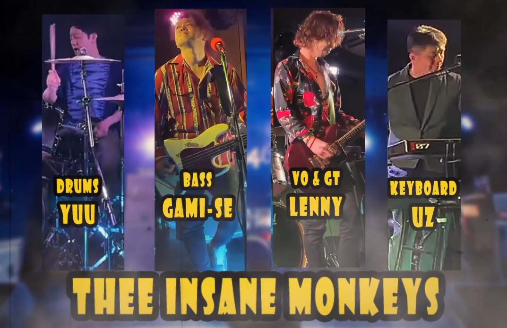2025/11/22 SET LIST
今回のセットリストです。
各曲をタップすると、YouTube埋め込み＋歌詞ページへ移動します。
ライブの余韻に浸りながら、THE YELLOW MONKEY の世界観を味わってください！
画面最下部に、ライブ当日のYOUTUBEへのリンクもあります！
02. LOVE COMMUNICATION
恋の勢いと本能的な衝動を鮮烈に描いた、躍動感ある名曲。
恋の勢いと本能的な衝動を鮮烈に描いた、躍動感ある名曲。

03. NEW YORK CITY LOSER
都会の孤独と挫折を抱えながら生き抜く姿を描いたシニカルロック。
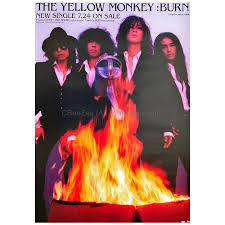
都会の孤独と挫折を抱えながら生き抜く姿を描いたシニカルロック。
04. BURN
抑えきれない情熱と衝動が爆発する、炎のように燃え上がる名曲。
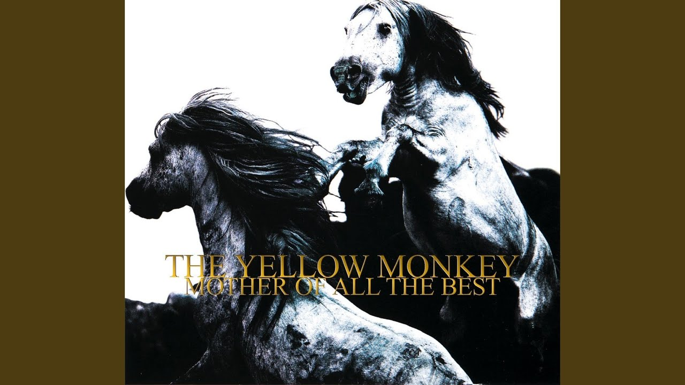
抑えきれない情熱と衝動が爆発する、炎のように燃え上がる名曲。
05. DEAR FEELING
退化する自分を抱え、唯一の感情にすがる本能と生存の物語。
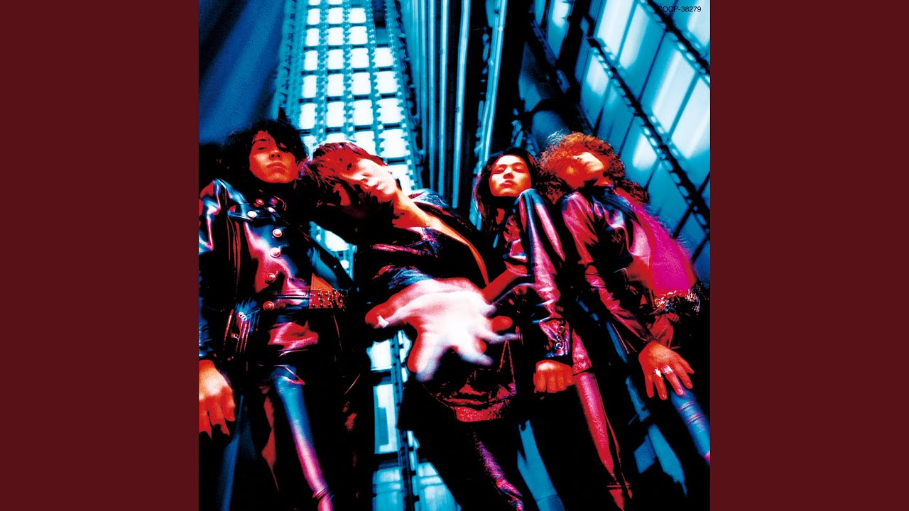
退化する自分を抱え、唯一の感情にすがる本能と生存の物語。
06. tactics
”戦略”の名の元、支配と服従の駆け引きで心を削る、危うい愛と策略のロック。
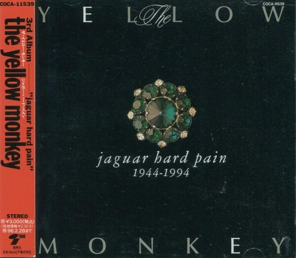
”戦略”の名の元、支配と服従の駆け引きで心を削る、危うい愛と策略のロック。
07. 遥かな世界
遠い世界に縋りながら現実を歩く、諦めと渇望の交錯する歌。
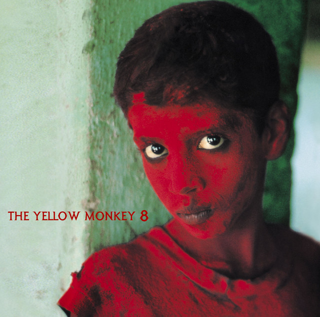
遠い世界に縋りながら現実を歩く、諦めと渇望の交錯する歌。
08. STONE BUTTERFLY
暴力と幻想が弾ける混沌で、快楽と孤独が踊る退廃的な重厚ロック。
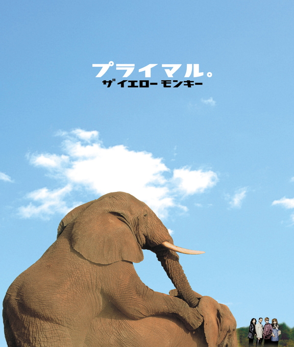
暴力と幻想が弾ける混沌で、快楽と孤独が踊る退廃的な重厚ロック。
09. プライマル。
軽口の裏に隠した未練と喪失を、鮮やかな日常で包んだ切ない別れ歌。
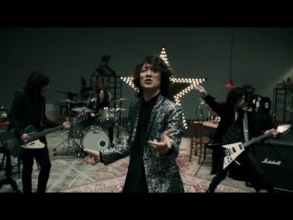
軽口の裏に隠した未練と喪失を、鮮やかな日常で包んだ切ない別れ歌。
10. STARS
君もひとつの星だと告げ、共に輝けとロックスターが呼び起こす歌。
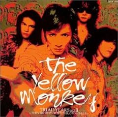
君もひとつの星だと告げ、共に輝けとロックスターが呼び起こす歌。
11. 太陽が燃えている
欲望と情熱が灼熱の太陽のように暴れ回る、狂気的なまでのラブロック。
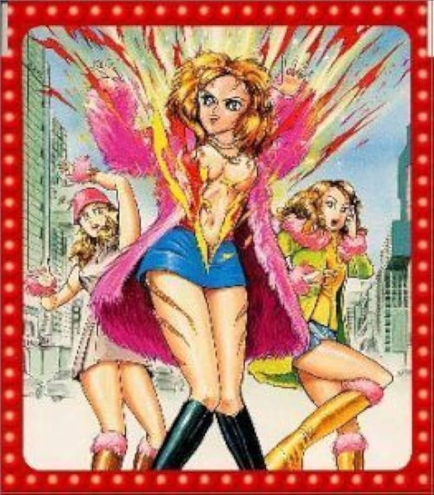
欲望と情熱が灼熱の太陽のように暴れ回る、狂気的なまでのラブロック。
12. SHOCK HEARTS
一触で爆ぜる衝動と誘惑が、男女の境界を危うく越える歌。
一触で爆ぜる衝動と誘惑が、男女の境界を危うく越える歌。
Infomation
ご来場に感謝を込めて！
本日のライブの配信録画をご覧いただけます！…え、マジで！？
大マジのマジだよッ！いよっ！太っ腹！！
2025.11.22 ユウシュウノビ ツアー LIVE！LIVE！LIVE！ at 246JUSO
YOUTUBEチャンネルの登録もコチラから！
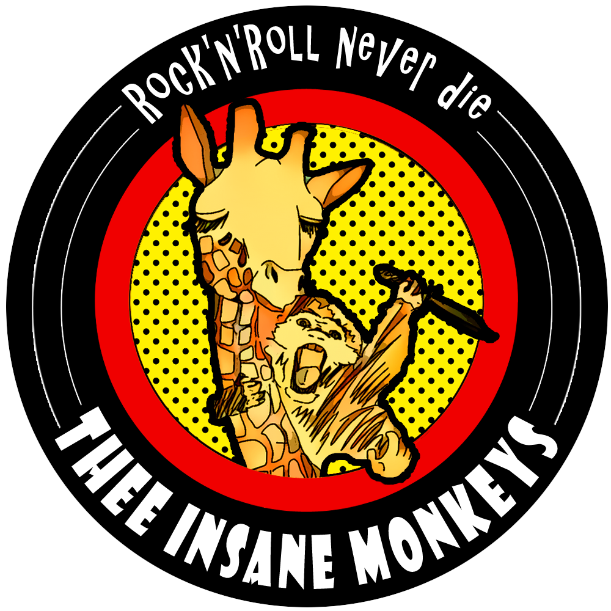
YOUTUBEチャンネルの登録もコチラから！
各種お問合せ先はコチラから
メンバーのSNSリンクを掲載しています。
メンバーのSNSリンクを掲載しています。